Speech Enhancement: Librivox + Freesound, 2 mics
Example 1
| Mixture |
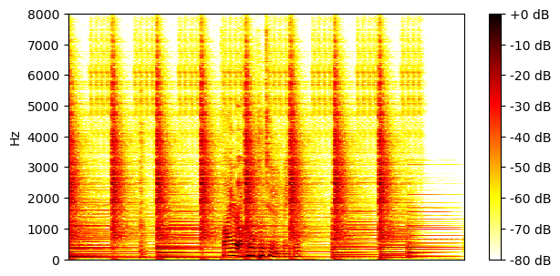
|
|
|---|---|---|
| Ground-truth sources |

SI-SDR = -3.24 dB |
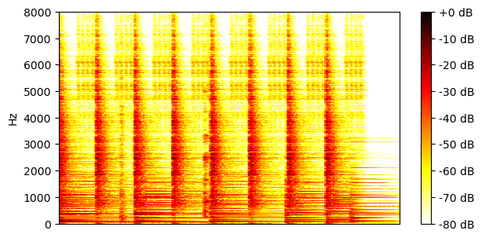
SI-SDR = 3.31 dB |
| Method | Separated source 0 | Separated source 1 |
| TI 64ms x 4 frames, BF2 |
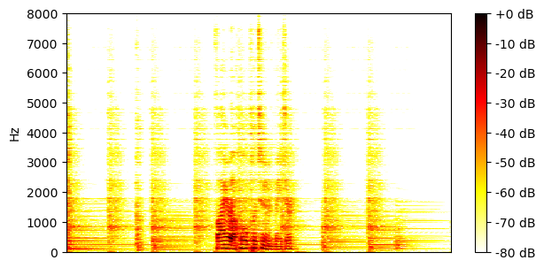
SI-SDR = 11.74 dB |
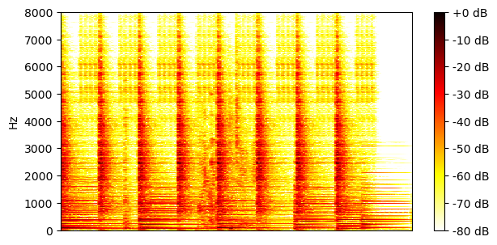
SI-SDR = 13.64 dB |
| TI 64ms x 4 frames, MN3 |
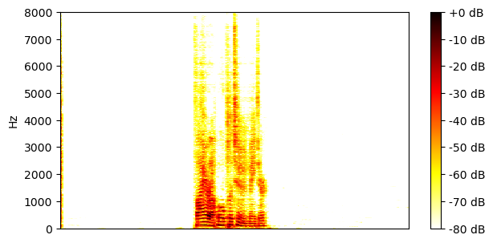
SI-SDR = 13.24 dB |

SI-SDR = 16.64 dB |
| TI 64ms x 4 frames, block size 3.2s, BF2 |
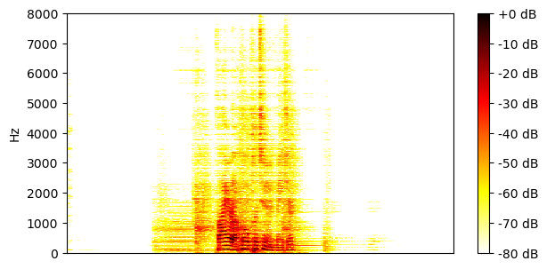
SI-SDR = 13.06 dB |
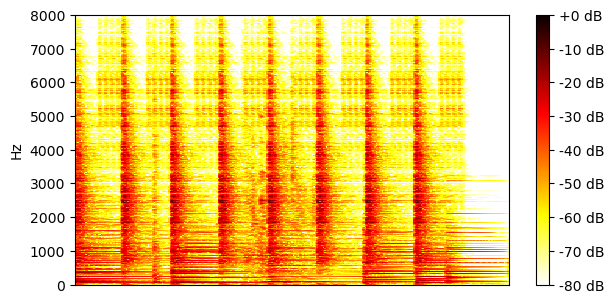
SI-SDR = 13.37 dB |
| TI 64ms x 4 frames, block size 3.2s, MN3 |
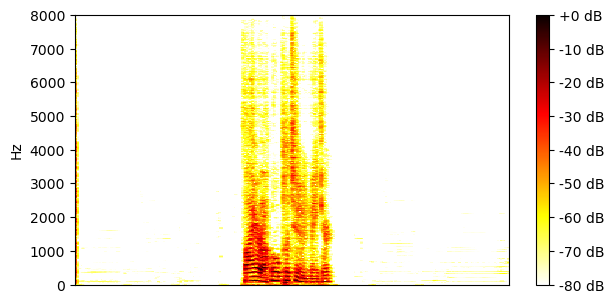
SI-SDR = 12.97 dB |
SI-SDR = 16.37 dB |
| TV 128ms x 2 frames, BF2 |
SI-SDR = 13.97 dB |
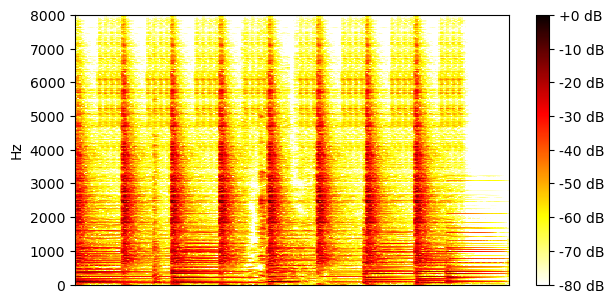
SI-SDR = 13.74 dB |
| TV 128ms x 2 frames, MN3 |
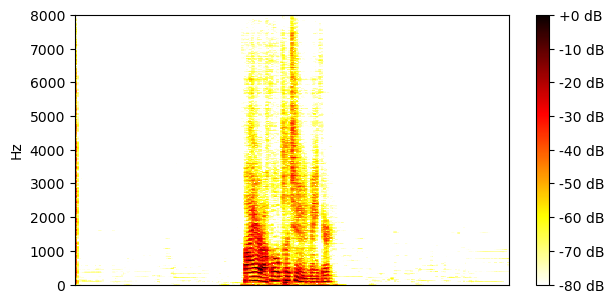
SI-SDR = 13.20 dB |
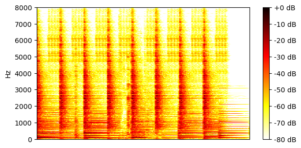
SI-SDR = 16.59 dB |
Example 2
| Mixture |

|
|
|---|---|---|
| Ground-truth sources |
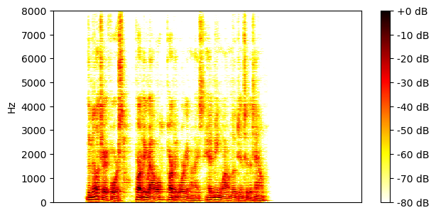
SI-SDR = 2.90 dB |
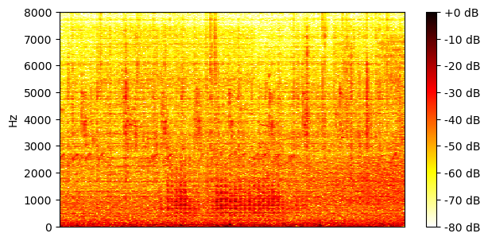
SI-SDR = -3.02 dB |
| Method | Separated source 0 | Separated source 1 |
| TI 64ms x 4 frames, BF2 |
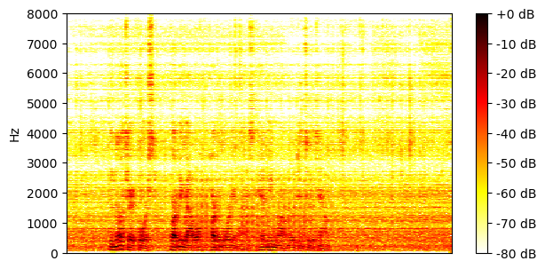
SI-SDR = 11.12 dB |
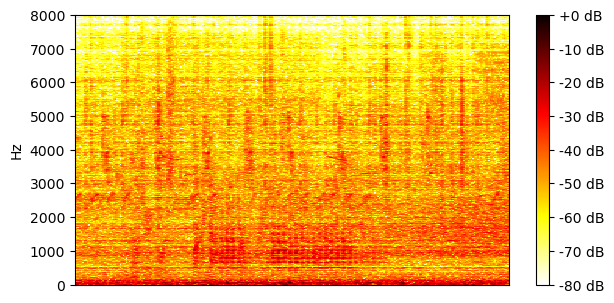
SI-SDR = 7.87 dB |
| TI 64ms x 4 frames, MN3 |
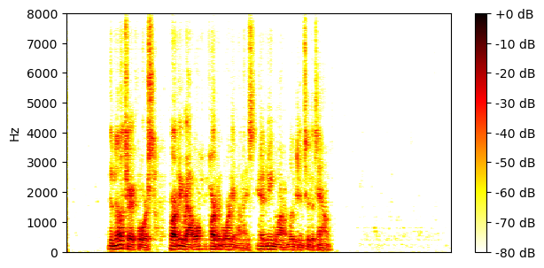
SI-SDR = 13.91 dB |
SI-SDR = 10.74 dB |
| TI 64ms x 4 frames, block size 3.2s, BF2 |
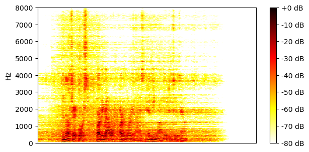
SI-SDR = 12.54 dB |
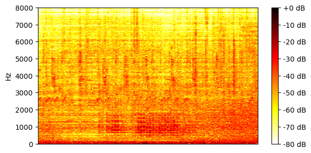
SI-SDR = 9.33 dB |
| TI 64ms x 4 frames, block size 3.2s, MN3 |
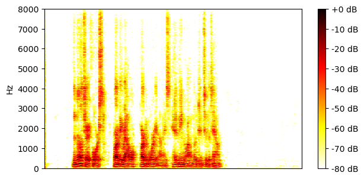
SI-SDR = 13.59 dB |
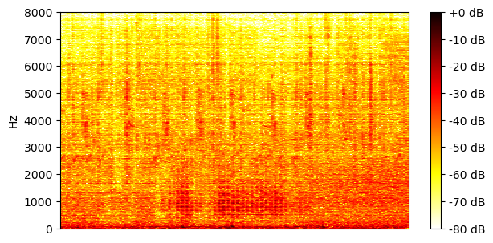
SI-SDR = 10.42 dB |
| TV 128ms x 2 frames, BF2 |
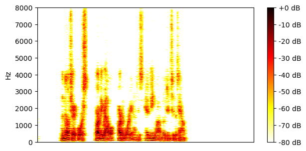
SI-SDR = 13.85 dB |
SI-SDR = 10.67 dB |
| TV 128ms x 2 frames, MN3 |
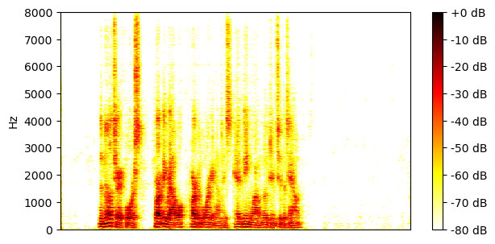
SI-SDR = 13.41 dB |
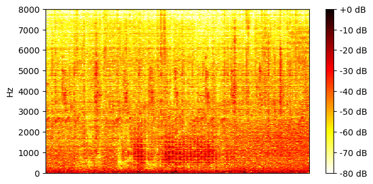
SI-SDR = 10.26 dB |
Example 3
| Mixture |
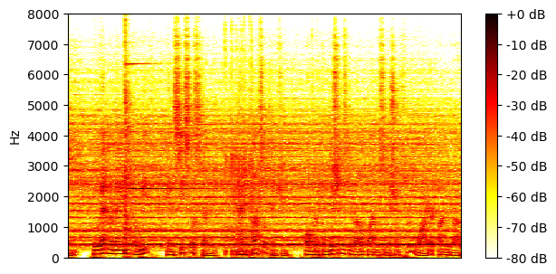
|
|
|---|---|---|
| Ground-truth sources |
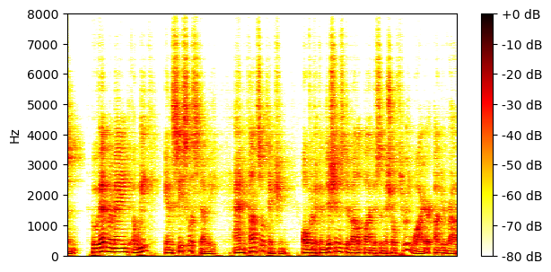
SI-SDR = -0.64 dB |
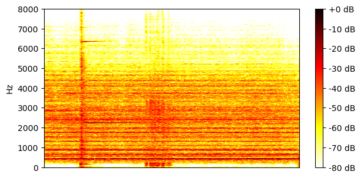
SI-SDR = 0.75 dB |
| Method | Separated source 0 | Separated source 1 |
| TI 64ms x 4 frames, BF2 |
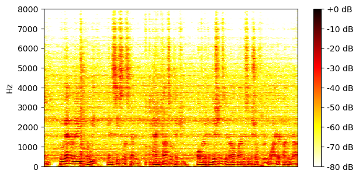
SI-SDR = 11.02 dB |
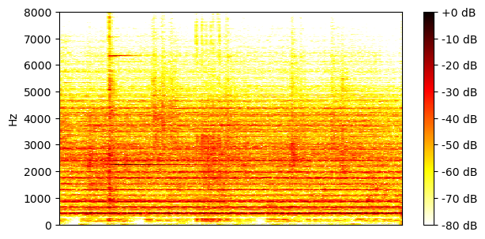
SI-SDR = 11.81 dB |
| TI 64ms x 4 frames, MN3 |
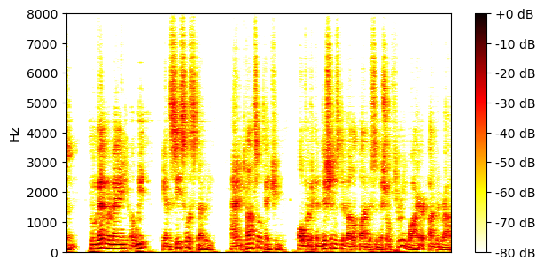
SI-SDR = 12.29 dB |
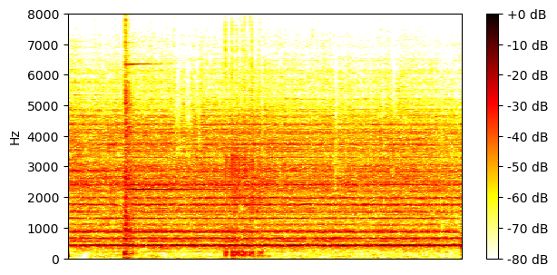
SI-SDR = 13.01 dB |
| TI 64ms x 4 frames, block size 3.2s, BF2 |
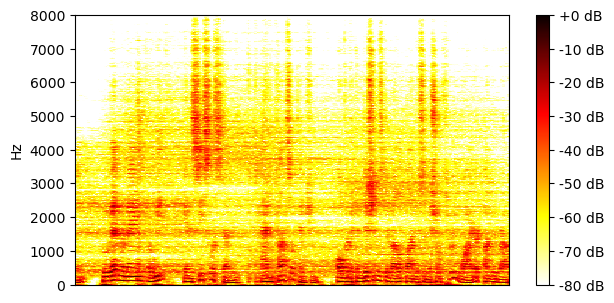
SI-SDR = 11.30 dB |
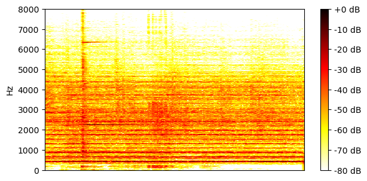
SI-SDR = 12.19 dB |
| TI 64ms x 4 frames, block size 3.2s, MN3 |
SI-SDR = 11.92 dB |
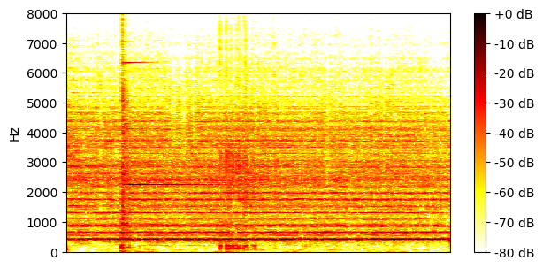
SI-SDR = 12.64 dB |
| TV 128ms x 2 frames, BF2 |
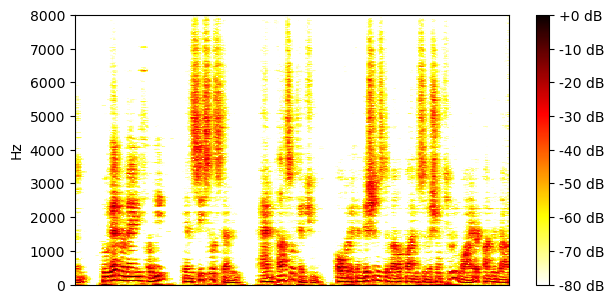
SI-SDR = 11.98 dB |
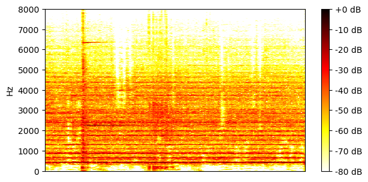
SI-SDR = 12.92 dB |
| TV 128ms x 2 frames, MN3 |
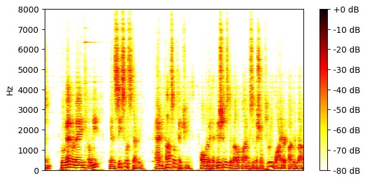
SI-SDR = 11.79 dB |
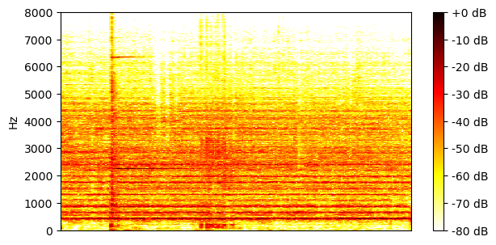
SI-SDR = 12.53 dB |
Example 4
| Mixture |
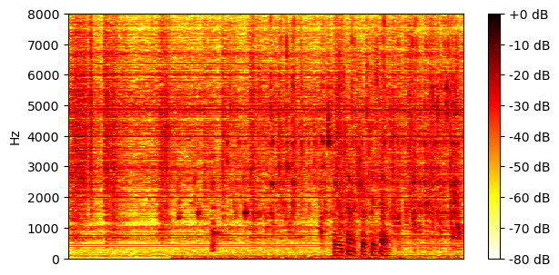
|
|
|---|---|---|
| Ground-truth sources |
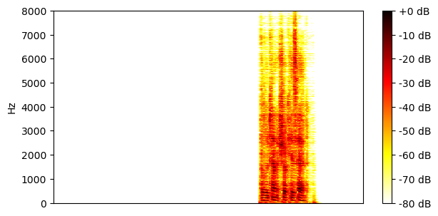
SI-SDR = -6.43 dB |
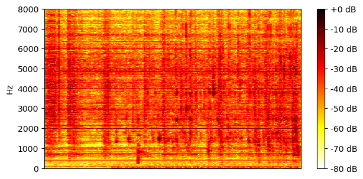
SI-SDR = 6.43 dB |
| Method | Separated source 0 | Separated source 1 |
| TI 64ms x 4 frames, BF2 |
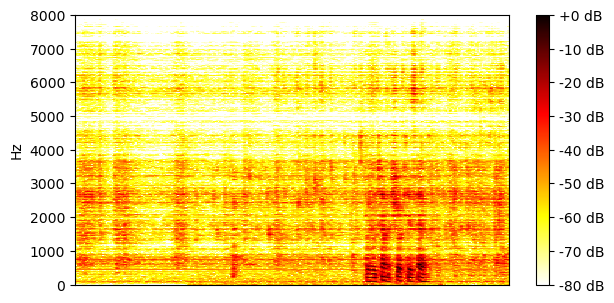
SI-SDR = 7.14 dB |
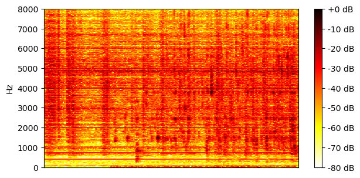
SI-SDR = 14.12 dB |
| TI 64ms x 4 frames, MN3 |
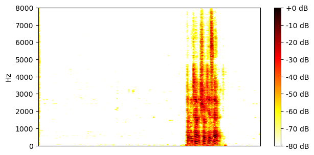
SI-SDR = 12.28 dB |
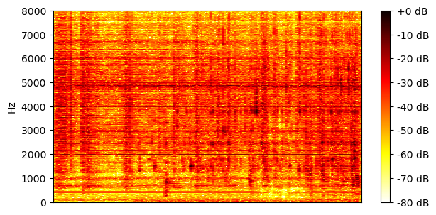
SI-SDR = 18.91 dB |
| TI 64ms x 4 frames, block size 3.2s, BF2 |
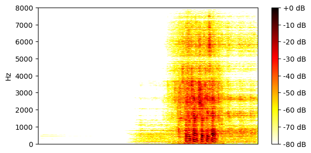
SI-SDR = 11.10 dB |
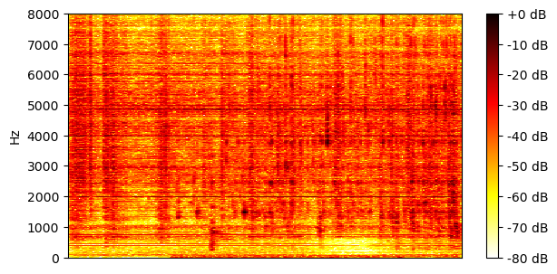
SI-SDR = 17.54 dB |
| TI 64ms x 4 frames, block size 3.2s, MN3 |
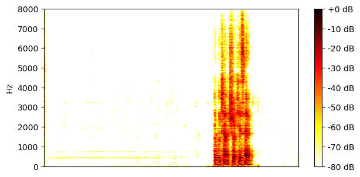
SI-SDR = 12.15 dB |
SI-SDR = 18.79 dB |
| TV 128ms x 2 frames, BF2 |
SI-SDR = 11.89 dB |
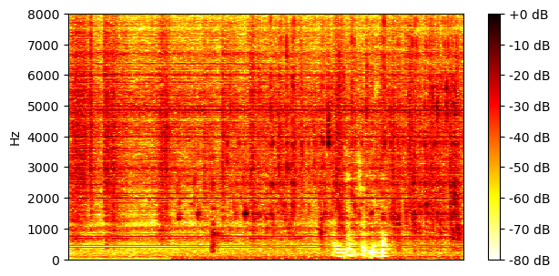
SI-SDR = 18.19 dB |
| TV 128ms x 2 frames, MN3 |
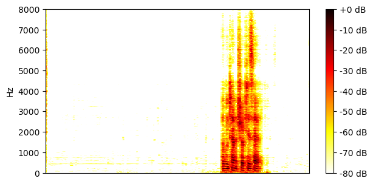
SI-SDR = 11.62 dB |
SI-SDR = 18.27 dB |
Example 5
| Mixture |
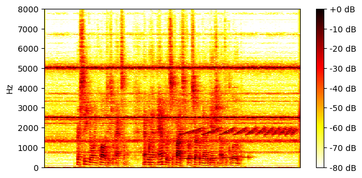
|
|
|---|---|---|
| Ground-truth sources |

SI-SDR = -4.54 dB |
SI-SDR = 4.50 dB |
| Method | Separated source 0 | Separated source 1 |
| TI 64ms x 4 frames, BF2 |
SI-SDR = 10.89 dB |
SI-SDR = 15.40 dB |
| TI 64ms x 4 frames, MN3 |
SI-SDR = 13.10 dB |
SI-SDR = 17.74 dB |
| TI 64ms x 4 frames, block size 3.2s, BF2 |
SI-SDR = 12.13 dB |
SI-SDR = 16.29 dB |
| TI 64ms x 4 frames, block size 3.2s, MN3 |

SI-SDR = 12.46 dB |
SI-SDR = 17.13 dB |
| TV 128ms x 2 frames, BF2 |
SI-SDR = 11.62 dB |
SI-SDR = 15.83 dB |
| TV 128ms x 2 frames, MN3 |
SI-SDR = 11.67 dB |

SI-SDR = 16.37 dB |
Example 6
| Mixture |
|
|
|---|---|---|
| Ground-truth sources |
SI-SDR = -9.78 dB |
SI-SDR = 9.70 dB |
| Method | Separated source 0 | Separated source 1 |
| TI 64ms x 4 frames, BF2 |
SI-SDR = 7.39 dB |
SI-SDR = 17.46 dB |
| TI 64ms x 4 frames, MN3 |
SI-SDR = 10.41 dB |
SI-SDR = 20.36 dB |
| TI 64ms x 4 frames, block size 3.2s, BF2 |
SI-SDR = 9.56 dB |
SI-SDR = 19.11 dB |
| TI 64ms x 4 frames, block size 3.2s, MN3 |
SI-SDR = 10.36 dB |
SI-SDR = 20.34 dB |
| TV 128ms x 2 frames, BF2 |
SI-SDR = 10.40 dB |
SI-SDR = 19.80 dB |
| TV 128ms x 2 frames, MN3 |
SI-SDR = 9.99 dB |
SI-SDR = 20.00 dB |
Example 7
| Mixture |
|
|
|---|---|---|
| Ground-truth sources |

SI-SDR = -7.97 dB |
SI-SDR = 7.95 dB |
| Method | Separated source 0 | Separated source 1 |
| TI 64ms x 4 frames, BF2 |
SI-SDR = 5.63 dB |
SI-SDR = 14.29 dB |
| TI 64ms x 4 frames, MN3 |
SI-SDR = 8.58 dB |
SI-SDR = 16.96 dB |
| TI 64ms x 4 frames, block size 3.2s, BF2 |
SI-SDR = 7.29 dB |
SI-SDR = 15.47 dB |
| TI 64ms x 4 frames, block size 3.2s, MN3 |
SI-SDR = 8.28 dB |
SI-SDR = 16.73 dB |
| TV 128ms x 2 frames, BF2 |
SI-SDR = 8.63 dB |

SI-SDR = 16.54 dB |
| TV 128ms x 2 frames, MN3 |
SI-SDR = 8.39 dB |

SI-SDR = 16.82 dB |
Example 8
| Mixture |
|
|
|---|---|---|
| Ground-truth sources |
SI-SDR = -2.07 dB |
SI-SDR = 2.10 dB |
| Method | Separated source 0 | Separated source 1 |
| TI 64ms x 4 frames, BF2 |
SI-SDR = 12.71 dB |
SI-SDR = 14.82 dB |
| TI 64ms x 4 frames, MN3 |
SI-SDR = 13.14 dB |
SI-SDR = 15.33 dB |
| TI 64ms x 4 frames, block size 3.2s, BF2 |
SI-SDR = 12.99 dB |
SI-SDR = 15.19 dB |
| TI 64ms x 4 frames, block size 3.2s, MN3 |
SI-SDR = 12.65 dB |
SI-SDR = 14.87 dB |
| TV 128ms x 2 frames, BF2 |
SI-SDR = 14.11 dB |

SI-SDR = 16.35 dB |
| TV 128ms x 2 frames, MN3 |
SI-SDR = 12.69 dB |
SI-SDR = 14.90 dB |
Example 9
| Mixture |
|
|
|---|---|---|
| Ground-truth sources |
SI-SDR = -2.95 dB |
SI-SDR = 3.14 dB |
| Method | Separated source 0 | Separated source 1 |
| TI 64ms x 4 frames, BF2 |
SI-SDR = 6.07 dB |
SI-SDR = 9.60 dB |
| TI 64ms x 4 frames, MN3 |
SI-SDR = 10.61 dB |
SI-SDR = 13.87 dB |
| TI 64ms x 4 frames, block size 3.2s, BF2 |
SI-SDR = 9.15 dB |
SI-SDR = 12.30 dB |
| TI 64ms x 4 frames, block size 3.2s, MN3 |
SI-SDR = 10.43 dB |
SI-SDR = 13.70 dB |
| TV 128ms x 2 frames, BF2 |
SI-SDR = 10.30 dB |
SI-SDR = 13.20 dB |
| TV 128ms x 2 frames, MN3 |
SI-SDR = 10.16 dB |
SI-SDR = 13.43 dB |
Example 10
| Mixture |
|
|
|---|---|---|
| Ground-truth sources |
SI-SDR = -9.42 dB |
SI-SDR = 9.51 dB |
| Method | Separated source 0 | Separated source 1 |
| TI 64ms x 4 frames, BF2 |
SI-SDR = 7.12 dB |
SI-SDR = 16.96 dB |
| TI 64ms x 4 frames, MN3 |
SI-SDR = 7.96 dB |
SI-SDR = 18.05 dB |
| TI 64ms x 4 frames, block size 3.2s, BF2 |
SI-SDR = 6.97 dB |
SI-SDR = 16.71 dB |
| TI 64ms x 4 frames, block size 3.2s, MN3 |
SI-SDR = 7.38 dB |
SI-SDR = 17.55 dB |
| TV 128ms x 2 frames, BF2 |
SI-SDR = 7.43 dB |
SI-SDR = 17.04 dB |
| TV 128ms x 2 frames, MN3 |
SI-SDR = 6.97 dB |
SI-SDR = 17.20 dB |
Example 11
| Mixture |

|
|
|---|---|---|
| Ground-truth sources |
SI-SDR = -9.25 dB |
SI-SDR = 9.31 dB |
| Method | Separated source 0 | Separated source 1 |
| TI 64ms x 4 frames, BF2 |
SI-SDR = 8.99 dB |
SI-SDR = 18.72 dB |
| TI 64ms x 4 frames, MN3 |
SI-SDR = 10.95 dB |
SI-SDR = 20.54 dB |
| TI 64ms x 4 frames, block size 3.2s, BF2 |
SI-SDR = 10.47 dB |
SI-SDR = 20.06 dB |
| TI 64ms x 4 frames, block size 3.2s, MN3 |
SI-SDR = 10.77 dB |
SI-SDR = 20.37 dB |
| TV 128ms x 2 frames, BF2 |
SI-SDR = 11.24 dB |
SI-SDR = 20.87 dB |
| TV 128ms x 2 frames, MN3 |
SI-SDR = 10.34 dB |
SI-SDR = 19.99 dB |
Example 12
| Mixture |

|
|
|---|---|---|
| Ground-truth sources |
SI-SDR = -5.18 dB |

SI-SDR = 5.28 dB |
| Method | Separated source 0 | Separated source 1 |
| TI 64ms x 4 frames, BF2 |
SI-SDR = 5.72 dB |
SI-SDR = 11.59 dB |
| TI 64ms x 4 frames, MN3 |
SI-SDR = 10.14 dB |
SI-SDR = 15.68 dB |
| TI 64ms x 4 frames, block size 3.2s, BF2 |
SI-SDR = 8.60 dB |
SI-SDR = 13.86 dB |
| TI 64ms x 4 frames, block size 3.2s, MN3 |
SI-SDR = 9.93 dB |
SI-SDR = 15.48 dB |
| TV 128ms x 2 frames, BF2 |
SI-SDR = 9.71 dB |
SI-SDR = 14.73 dB |
| TV 128ms x 2 frames, MN3 |
SI-SDR = 9.63 dB |
SI-SDR = 15.21 dB |
Example 13
| Mixture |

|
|
|---|---|---|
| Ground-truth sources |
SI-SDR = -3.67 dB |

SI-SDR = 3.65 dB |
| Method | Separated source 0 | Separated source 1 |
| TI 64ms x 4 frames, BF2 |
SI-SDR = 11.01 dB |

SI-SDR = 14.00 dB |
| TI 64ms x 4 frames, MN3 |
SI-SDR = 16.90 dB |
SI-SDR = 20.59 dB |
| TI 64ms x 4 frames, block size 3.2s, BF2 |
SI-SDR = 16.48 dB |
SI-SDR = 16.93 dB |
| TI 64ms x 4 frames, block size 3.2s, MN3 |
SI-SDR = 17.07 dB |
SI-SDR = 20.78 dB |
| TV 128ms x 2 frames, BF2 |
SI-SDR = 17.84 dB |
SI-SDR = 17.53 dB |
| TV 128ms x 2 frames, MN3 |
SI-SDR = 16.71 dB |
SI-SDR = 20.42 dB |
Example 14
| Mixture |
|
|
|---|---|---|
| Ground-truth sources |
SI-SDR = 5.04 dB |
SI-SDR = -5.08 dB |
| Method | Separated source 0 | Separated source 1 |
| TI 64ms x 4 frames, BF2 |
SI-SDR = 15.68 dB |
SI-SDR = 9.58 dB |
| TI 64ms x 4 frames, MN3 |
SI-SDR = 23.09 dB |
SI-SDR = 18.00 dB |
| TI 64ms x 4 frames, block size 3.2s, BF2 |
SI-SDR = 23.62 dB |
SI-SDR = 13.31 dB |
| TI 64ms x 4 frames, block size 3.2s, MN3 |
SI-SDR = 23.11 dB |
SI-SDR = 18.02 dB |
| TV 128ms x 2 frames, BF2 |
SI-SDR = 20.10 dB |
SI-SDR = 11.87 dB |
| TV 128ms x 2 frames, MN3 |
SI-SDR = 21.51 dB |

SI-SDR = 16.42 dB |
Example 15
| Mixture |
|
|
|---|---|---|
| Ground-truth sources |

SI-SDR = -4.18 dB |
SI-SDR = 4.40 dB |
| Method | Separated source 0 | Separated source 1 |
| TI 64ms x 4 frames, BF2 |
SI-SDR = 9.28 dB |
SI-SDR = 13.82 dB |
| TI 64ms x 4 frames, MN3 |
SI-SDR = 13.79 dB |
SI-SDR = 18.05 dB |
| TI 64ms x 4 frames, block size 3.2s, BF2 |
SI-SDR = 13.50 dB |
SI-SDR = 17.33 dB |
| TI 64ms x 4 frames, block size 3.2s, MN3 |
SI-SDR = 14.20 dB |
SI-SDR = 18.39 dB |
| TV 128ms x 2 frames, BF2 |
SI-SDR = 15.32 dB |
SI-SDR = 19.02 dB |
| TV 128ms x 2 frames, MN3 |
SI-SDR = 14.22 dB |
SI-SDR = 18.38 dB |
Example 16
| Mixture |

|
|
|---|---|---|
| Ground-truth sources |

SI-SDR = -6.84 dB |

SI-SDR = 6.86 dB |
| Method | Separated source 0 | Separated source 1 |
| TI 64ms x 4 frames, BF2 |
SI-SDR = 7.31 dB |
SI-SDR = 14.66 dB |
| TI 64ms x 4 frames, MN3 |
SI-SDR = 9.67 dB |
SI-SDR = 16.84 dB |
| TI 64ms x 4 frames, block size 3.2s, BF2 |
SI-SDR = 8.04 dB |
SI-SDR = 15.29 dB |
| TI 64ms x 4 frames, block size 3.2s, MN3 |
SI-SDR = 9.41 dB |
SI-SDR = 16.61 dB |
| TV 128ms x 2 frames, BF2 |
SI-SDR = 8.90 dB |
SI-SDR = 16.19 dB |
| TV 128ms x 2 frames, MN3 |
SI-SDR = 8.88 dB |
SI-SDR = 16.13 dB |
Example 17
| Mixture |
|
|
|---|---|---|
| Ground-truth sources |

SI-SDR = -16.36 dB |
SI-SDR = 16.54 dB |
| Method | Separated source 0 | Separated source 1 |
| TI 64ms x 4 frames, BF2 |
SI-SDR = 6.08 dB |
SI-SDR = 23.34 dB |
| TI 64ms x 4 frames, MN3 |
SI-SDR = 8.59 dB |
SI-SDR = 25.68 dB |
| TI 64ms x 4 frames, block size 3.2s, BF2 |
SI-SDR = 7.20 dB |
SI-SDR = 24.03 dB |
| TI 64ms x 4 frames, block size 3.2s, MN3 |
SI-SDR = 8.20 dB |
SI-SDR = 25.33 dB |
| TV 128ms x 2 frames, BF2 |
SI-SDR = 8.48 dB |
SI-SDR = 24.78 dB |
| TV 128ms x 2 frames, MN3 |
SI-SDR = 8.15 dB |
SI-SDR = 25.29 dB |
Example 18
| Mixture |
|
|
|---|---|---|
| Ground-truth sources |
SI-SDR = 2.77 dB |

SI-SDR = -2.76 dB |
| Method | Separated source 0 | Separated source 1 |
| TI 64ms x 4 frames, BF2 |
SI-SDR = 12.80 dB |
SI-SDR = 9.82 dB |
| TI 64ms x 4 frames, MN3 |
SI-SDR = 15.39 dB |
SI-SDR = 12.50 dB |
| TI 64ms x 4 frames, block size 3.2s, BF2 |
SI-SDR = 14.50 dB |
SI-SDR = 11.60 dB |
| TI 64ms x 4 frames, block size 3.2s, MN3 |
SI-SDR = 15.18 dB |

SI-SDR = 12.28 dB |
| TV 128ms x 2 frames, BF2 |
SI-SDR = 15.33 dB |
SI-SDR = 12.47 dB |
| TV 128ms x 2 frames, MN3 |
SI-SDR = 14.92 dB |
SI-SDR = 12.02 dB |
Example 19
| Mixture |
|
|
|---|---|---|
| Ground-truth sources |

SI-SDR = 11.68 dB |

SI-SDR = -11.71 dB |
| Method | Separated source 0 | Separated source 1 |
| TI 64ms x 4 frames, BF2 |
SI-SDR = 19.49 dB |
SI-SDR = 7.28 dB |
| TI 64ms x 4 frames, MN3 |
SI-SDR = 22.84 dB |
SI-SDR = 10.81 dB |
| TI 64ms x 4 frames, block size 3.2s, BF2 |
SI-SDR = 21.38 dB |

SI-SDR = 9.40 dB |
| TI 64ms x 4 frames, block size 3.2s, MN3 |

SI-SDR = 22.49 dB |
SI-SDR = 10.42 dB |
| TV 128ms x 2 frames, BF2 |
SI-SDR = 22.80 dB |
SI-SDR = 10.84 dB |
| TV 128ms x 2 frames, MN3 |
SI-SDR = 22.21 dB |
SI-SDR = 10.15 dB |
Example 20
| Mixture |
|
|
|---|---|---|
| Ground-truth sources |

SI-SDR = 2.86 dB |

SI-SDR = -2.71 dB |
| Method | Separated source 0 | Separated source 1 |
| TI 64ms x 4 frames, BF2 |
SI-SDR = 11.93 dB |
SI-SDR = 8.98 dB |
| TI 64ms x 4 frames, MN3 |
SI-SDR = 14.21 dB |
SI-SDR = 11.23 dB |
| TI 64ms x 4 frames, block size 3.2s, BF2 |
SI-SDR = 12.76 dB |
SI-SDR = 10.08 dB |
| TI 64ms x 4 frames, block size 3.2s, MN3 |
SI-SDR = 14.03 dB |
SI-SDR = 11.05 dB |
| TV 128ms x 2 frames, BF2 |
SI-SDR = 13.43 dB |
SI-SDR = 10.83 dB |
| TV 128ms x 2 frames, MN3 |
SI-SDR = 13.75 dB |
SI-SDR = 10.77 dB |